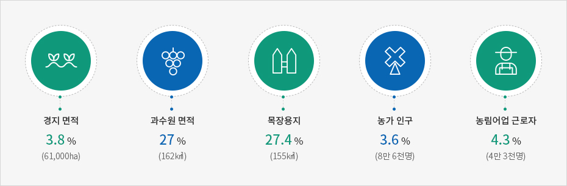

전통 기간산업
- Home
- 투자환경
- 전통 기간산업
1차 산업
제주의 농업은 전통적인 산업이자 경제의 근간이 되는 생명 산업으로써 제주에서 가장 넓은 면적을 차지하고 있는 산업입니다.
제주는 지역총생산(GRDP)이 대한민국의 1% 수준에 불과하지만, 제주에서 생산되는 채소류, 과실류 생산량 등은 전국 산출량의 7.7%(2018)를 차지하고 있을 정도로 1차 산업이 매우 발달한 지역입니다.
특히 전국의 양배추(32.9%), 당근(45.9%), 무(25.6%)와 같은 작물과 감귤(99.8%) 등이 제주에서 많이 생산되고 있고, 돼지 사육두수도 전국의 5.3%를 차지하고 있는 대한민국 농수축산물의 중요 생산기지입니다.
이는 제주의 청정 자연환경과, 화산섬의 양질의 토양과 기후가 사계절 고품질의 농수산물을 생산하기에 최적의 조건을 갖추고 있어 대한민국 소비자들에게 높은 사랑을 받고 있기 때문입니다.
제주의 1차산업 자원이 대한민국에서 차지하는 비중
